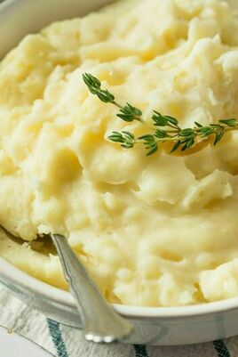

Mashed Potatoes

Mashed potatoes, simple, fluffy, and so delicious.
This recipe will take you through the steps to make the best, most basic, but well-made mashed potatoes. You'll want to bookmark this recipe and save for later.
Of course, with all good recipes, it can always be taken with a grain of salt and prepared the way you like it.
This is more of a guideline than it is a recipe, please feel free to adjust based on your preferences and tastes.
Season and flavor to your liking. In this recipe, I will also give reasonings for adjustments in the recipe.
Ingredients
- 4 lbs russet or yellow potatoes, peeled, whole
- 1/4 cup unsalted butter, melted
- 2 cups heavy cream, light cream, or whole milk
- 1 1/2 cups parmesan cheese, grated
- 1/8-1/4 cup of garlic powder
- Optional: 1 cup chives, freshly chopped
- Salt and pepper to taste
Directions
- Bring a pot of water to boil. Add potatoes until tender but firm. This will take about 15 minutes. Drain the water.
- While the potatoes are cooking, in a small saucepan and heat the butter and milk until milk has taken on a pale yellow color.
- In a seperate bowl, mash potatoes until there are no more large chunks of potato left. Do not over-mash the potatoes or the potatoes will become gluey.
- Slowly add the milk and butter mixture into potatoes and fold to desired fluffiness.
- Add the parmesan cheese and garlic powder(optional) to the potatoes.
- Season with salt and pepper to taste.
- Sprinkle some chopped chives on top to add some color contrast, if you'd like!